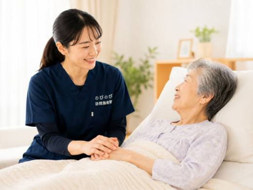

布団の中で足を伸ばした拍子に、ふくらはぎが急に固まって激しく痛む。夜中や明け方のこむら返りで目が覚め、そのあと眠れなくなる方が多くおられます。年齢を重ねると、こうしたつりが増えやすくなります。ここでは、足がつる背景と、まず主治医に相談したほうがよい目安、家でできる予防、そして訪問鍼灸マッサージで足をどうケアできるかを、順を追ってお伝えします。
短くまとめます。こむら返りそのものは病気の名前ではなく、筋肉の疲れや冷え、水分・ミネラル不足、血のめぐりなど、いくつもの要素が重なって起こります。頻繁に繰り返す、強い痛みやしびれ・むくみを伴う、片脚だけ急に腫れて痛むといったときは、背景に病気や薬の影響のことがあり、まず主治医への相談が先です。そのうえで慢性のこわばりに、鍼やお灸で足のめぐりを促す補助が組み合わせられます。ご自宅での1回は総額3,950円、1割の方でおよそ395円が目安です。
こむら返りは、ふくらはぎで何が起きているのか
布団の中で足を伸ばした拍子に、ふくらはぎが石のように固まって激しく痛む。あの状態がこむら返りです。筋肉が自分の意思とは関係なく強く縮んだまま、しばらくゆるまなくなります。「こむら」はふくらはぎを指す古い言葉で、名前のとおりふくらはぎに多いのですが、足の裏や指、太ももで起きることもあります。
やっかいなのは、痛みが数分でおさまっても、その先です。張りが残って寝つけない。今夜もまた起きるのではと身構えて、眠りが浅くなる。ご本人にとっては、その数分がとても長く感じられます。病気の名前ではなく、体のいくつかの条件が重なったときに出るサインだと考えると、手当ての糸口が見えてきます。
冷え・水分・ミネラル・めぐり。高齢の方に多い背景
足がつる背景には、加齢による筋肉の疲れや減り、体の水分不足、汗や食事の偏りで崩れるミネラルのバランス、そして足先の冷えと血のめぐりの低下があります。どれか一つが犯人というより、いくつもが少しずつ重なって「つりやすさ」をつくっていることが多いものです。
この条件がそろいやすいのが、年齢を重ねた方の暮らしです。のどの渇きを感じにくくなり、水分が足りないまま一日が過ぎる。動く量が減ってふくらはぎがこわばる。足先はいつも冷たい。加えて、利尿薬など飲んでいる薬の影響や、糖尿病・動脈硬化・腎臓の病気が絡んでいることもあります。「歳だから仕方ない」で片づけず、重なった要素を一つずつほどいていく見方が助けになります。
夜中や明け方に、なぜ集中して起こるのか
こむら返りが日中より夜中や明け方に偏るのには、理由があります。眠っている間は体温が下がって足先のめぐりが落ち、寝返りや足を伸ばす動きの拍子に、縮んだ筋肉が引きつってしまうためと考えられています。夏でも油断はできません。就寝中の冷房で足だけが冷え、明け方につる方は珍しくありません。
日中にたっぷり汗をかき、水分やミネラルが足りないまま眠りにつくと、明け方につながりやすくなります。長く座ってむくんだ日や、いつもより歩いた日の夜に決まって起こる、という方もいます。寝る前に足を温め、水分を少し口にし、ふくらはぎを軽く伸ばしておく。こうした小さな備えで夜のつりが減ることもありますが、効き方には個人差があります。
こんなときは、鍼灸より先に主治医へ
ケアの話に入る前に、はっきりお伝えしておきたいことがあります。ほぼ毎晩のように繰り返す、痛みがとても強い、つったあともしびれやむくみが長く残る、歩くとふくらはぎが痛くて立ち止まってしまう。こうしたときは、まずかかりつけ医や内科にご相談ください。
とくに注意したいのが、片方の足だけが急に腫れて痛み、熱をもつ場合です。血のかたまり、いわゆる血栓ができている可能性があり、早めの受診が要ります。しびれや脱力を伴うとき、糖尿病や腎臓・甲状腺の持病があるときも同じです。原因の見極めは医療の仕事で、鍼灸はそれが確かめられたうえで組み合わせるものだとお考えください。足のしびれや冷えが背景にある方は、糖尿病の足のしびれとフットケアや手足のしびれ・冷えがつらい方へもあわせてお読みいただくと、受診の目安がつかみやすくなります。
訪問で足をみるとき、ふくらはぎだけでは終わらない
足がつるお悩みで伺ったとき、触れるのはふくらはぎだけではありません。足首、足の裏、太もも、腰まわりまで、こわばりや冷え、むくみの様子をたどっていきます。つるのは片方か両方か。どんなときに起こるか。水分はとれているか。日中はどのくらい動いているか。暮らしの様子をうかがいながら、つりやすさの背景を全体から読みとります。
むくみの左右差、皮膚の冷たさ、押したときに張りが残る具合。同じ人でも日によって足の状態は変わるので、その日に合わせて触れ方を加減します。生活の場でそのまま足をみられるのは、家に伺う形ならではです。ご本人も気づいていなかった小さな変化を、早めに拾えることがあります。
鍼やお灸でできること、約束できないこと
固くなったふくらはぎや足裏の筋肉をゆるめ、血のめぐりを助けて、冷えやこわばりを和らげる。鍼やお灸に期待できるのは、この範囲の手伝いです。筋肉がやわらかく、めぐりのよい状態に近づけば、つりにくい足を保つ支えになると考えられます。急につった瞬間の応急処置ではなく、ふだんからつりにくい状態を保っていくのが訪問の役わりです。
やさしく足をほぐす手技や、動ける範囲を保つための機能訓練も、鍼灸に加えて、組み合わせます。これらについて別途の料金はいただきません。別の給付として上乗せするものではありません。ただし、これらは病気を治すものではなく、つりが完全になくなると約束できるものでもありません。楽になったと感じる方もいれば、そうでない方もいて、効き方には個人差があります。
夜中につってしまったときと、費用のこと
その瞬間は、あわてないことです。つった側の足の指を、すね側へゆっくり反らすと、ふくらはぎが伸びて和らぐことがあります。手が届きにくければ、タオルを足裏にかけて手前に引いても構いません。強く反らしすぎず、痛みの少ない範囲で。おさまったらふくらはぎを軽くさすり、足を温めておくと落ち着きます。繰り返す回数や時間帯をメモしておくと、受診のときに役立ちます。
費用の目安もお伝えしておきます。ご自宅での施術は1回の総額が3,950円で、医療保険を使うと自己負担は1割の方で約395円です。たとえば週2回伺うと、1割の方でひと月およそ3,160円が目安になります。お支払いは月ごとにまとめてで、その月の明細をお渡しします。使うのは医療保険の療養費で、医師の同意書が要ります。要介護認定は必要なく、介護保険の限度額とは別の枠なので併用できます。なお、同じ部位で医療保険のリハビリを受けている場合、その部位の鍼灸は同時には算定できません。
こむら返り自体は、保険対象として国が定める神経痛・リウマチ・頸肩腕症候群・五十肩・腰痛症・頸椎捻挫後遺症という6つの疾病には含まれません。それでも、足の痛みやしびれについて医師が神経痛などと診て治療の必要を認め、通院がむずかしい場合には、医療保険での訪問鍼灸マッサージの対象になりえます。国家資格を持つはり師・きゅう師が、大阪府・兵庫県の対応エリアにあるご自宅へ伺います。同意書の準備もこちらで手伝いますので、気がかりがあればお声かけください。
よくある質問
足がつるだけでも保険で受けられますか？
足がつること自体が保険の対象になるわけではありません。それに伴う筋肉のこわばりや慢性的な痛みで医師が治療の必要を認め、通院がむずかしい場合に、医療保険での訪問鍼灸マッサージの対象となり得ます。まずは背景を確かめるための受診をおすすめします。対象になるかどうかや同意書のご準備も、当院がお手伝いします。
料金はいくらくらいになりますか？
1回の施術の総額は3,950円で、自己負担は1割の方でおよそ395円が目安です。別途の出張費（出張料・交通費）はかからず、対応エリア内はどこでも同額です。介護保険の区分支給限度額とは別の枠で使えます。
支払いは毎回その場で払うのですか？
お支払いは月ごとにまとめてです。内訳はあとからでも確認いただけます。たとえば週1回うかがう場合、ひと月の自己負担はおよそ1,580円（1割の方）が目安です。
なぜ高齢になると足がつりやすいのですか？
加齢による筋肉の減少や疲れ、水分不足、ミネラルの乱れ、足の冷えや血のめぐりの滞りなどが重なりやすくなるためと考えられています。飲んでいる薬や糖尿病・腎臓の病気が関わることもあります。気になるときは医師にもご相談ください。
毎晩のようにつるのですが、受診したほうがよいですか？
はい。頻繁に繰り返す、痛みが強い、しびれやむくみを伴う、片脚だけ急に腫れて痛むといったときは、まずかかりつけ医や内科にご相談ください。背景に病気や薬の影響が隠れていることがあり、原因の見極めは医療が主になります。
鍼やお灸で足のつりは治りますか？
つりが完全になくなると約束できるものではありません。固くなったふくらはぎや足の筋肉をゆるめ、血のめぐりを促して、つりにくい状態づくりを補助する役わりです。冷えやこわばりが和らいで楽になったという方もいますが、効き方には個人差があります。
夜中に足がつったときは、どうすればよいですか？
あわてず、つった側の足の指をゆっくり手前に反らすと、ふくらはぎが伸びて和らぐことがあります。タオルを足裏にかけて手前に引く方法もあります。強く反らしすぎず、痛みの少ない範囲で行い、収まったら足を温めておくと落ち着きやすくなります。
対応しているのはどのエリアですか？
大阪府は豊中市・吹田市・茨木市・高槻市・箕面市・摂津市・池田市、大阪市は淀川区・東淀川区・都島区・北区・旭区、兵庫県は尼崎市・伊丹市にうかがっています。エリア内は別途の出張費がかからず同額です。通院がむずかしい方のご自宅で施術します。

透析を受けている方の体のケア｜だるさ・むくみ・こむら返りと訪問鍼灸マッサージ
続きを読む
床ずれ予防と寝返り介助｜在宅でできる褥瘡ケアと訪問鍼灸マッサージ
続きを読む
少し歩くと足がしびれて休んでしまう高齢のご家族へ｜脊柱管狭窄症の間欠性跛行と訪問鍼灸・マッサージ
続きを読む
手足のしびれ・冷えがつらい高齢のご家族へ｜訪問鍼灸マッサージという選択肢
続きを読む
なかなか寝つけない・夜中に目が覚める方へ。睡眠の悩みと在宅でできるケア
続きを読む